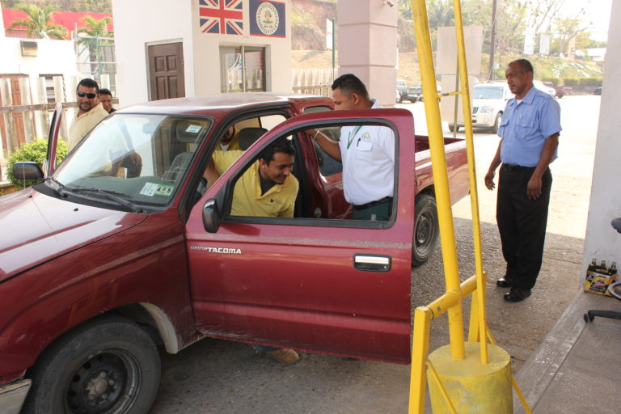

My Resume
I Started to work At the Belize Agicultural Health Authority in 2002
I Started to work as a Data entry in 2002 and in 2010 I was promoted as a Data Analyst
In February 2022 i was given another Post as Information Technology Technician
My Work Place Activities
